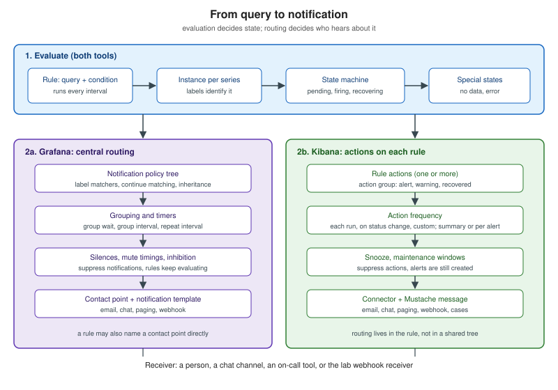

Alerting Fundamentals
|
This content was generated with the assistance of AI and should be verified against the official documentation before being relied on in production. |
Checked on 2026-11-09 against Grafana 13.3.x and Kibana 9.5.x.
An alert turns a question about the data ("is the error ratio above 5 percent?") into a decision about people ("should someone be told?"). Two separate machines make that decision, and most confusion about alerting comes from mixing them up. The first machine evaluates: it runs a query on a schedule, compares the result with a condition and keeps a state for each series. The second machine notifies: it takes the state changes and decides who is told, how often, in how many messages and when to stay quiet.
This page explains both machines in tool-neutral terms and shows where Grafana and Kibana implement each part. It is the base for the deeper pages: Designing Actionable Alerts, Notifications and Incident Response, Grafana: Alerting Architecture and Kibana: Alerting Overview. The Prometheus implementation of the same model is in Recording and Alerting Rules and Alertmanager.

Anatomy of an alert rule
An alert rule has the same five ingredients in every tool.
-
A query that selects the data: PromQL, LogQL, an SQL query, a KQL or ES|QL query, or an Elasticsearch aggregation.
-
A condition that turns the query result into true or false: a threshold, a comparison, a missing-data test.
-
An evaluation interval: how often the rule is checked. Grafana calls the group’s interval the evaluation interval, and Kibana calls the rule’s schedule the check interval.
-
A duration: how long the condition must hold before the alert is considered real. Grafana calls it the pending period, Prometheus the
forclause, and in Kibana the closest control is the alert delay (the number of consecutive runs that must meet the conditions) where a rule type offers it. -
Metadata: labels used for routing and identity, and annotations used for the human-readable message and the runbook link.
Grafana evaluates a rule by running its queries and checking the alert condition, which is the single query or expression that decides whether the alert fires; time series results must be reduced to one number per series, and tabular results must have exactly one numeric column. Kibana describes a rule as conditions, a schedule and actions, with the check interval being approximate because checks are queued and depend on task claiming and system load.
The Prometheus form is the simplest way to see all five ingredients in one place. This rule belongs in a Prometheus rule file. The lab’s Prometheus does not load rules (Grafana and Kibana evaluate the lab’s alerts), so this file is for reading; its thresholds are the lab’s:
groups:
- name: bookshelf-alerts
interval: 30s
rules:
- alert: BookshelfHigh5xxRatio
expr: |
sum by (application) (rate(http_server_requests_seconds_count{application="bookshelf", status=~"5.."}[5m]))
/
sum by (application) (rate(http_server_requests_seconds_count{application="bookshelf"}[5m]))
> 0.05
for: 5m
keep_firing_for: 10m
labels:
severity: critical
team: bookshelf-sre
annotations:
summary: "Bookshelf 5xx ratio above 5 percent"
description: "5xx ratio is {{ $value | humanizePercentage }} for {{ $labels.application }}."
runbook_url: "https://example.com/runbooks/bookshelf-5xx"Reference: Prometheus: Alerting rules (the fields alert, expr, for, keep_firing_for, labels and annotations, and the $labels and $value template variables). humanizePercentage is a template function from the Prometheus template reference. The runbook URL is a placeholder.
In Prometheus an element that is active but not yet firing is pending, and without for an alert fires on the first
evaluation. The same rule in Grafana-managed alerting is built from a query, a Reduce expression and a Threshold expression
(see Grafana: Alert Rules, Queries and Conditions),
and in Kibana from the Elasticsearch query or custom threshold rule
(see Kibana: Observability Rules).
One rule, many alerts
A single rule can produce one alert instance per series. Grafana’s multi-dimensional example uses a PromQL query that
returns one series per CPU, so one rule yields one instance per label set, such as {cpu="cpu-0"}, and only the instances
whose value is above the threshold fire while the others stay Normal:
sum by(cpu) (
rate(node_cpu_seconds_total{mode!="idle"}[1m])
)Source: Grafana: Multi-dimensional alerts.
Kibana does the same with a group-by field: each server exceeding a CPU threshold gets its own alert, and its own notification depending on the action frequency.
This is powerful, because the rule does not need to know the services in advance, and dangerous for the same reason: the number of instances is the number of series, so a high-cardinality label (a user id, a URL path with identifiers) turns one rule into thousands of alerts and thousands of notifications. Group by the dimensions that decide who acts: service, route, instance, but not request identifiers. The label set identifies the instance, so changing a label value creates a new instance and the old one resolves; this is why query values must not be copied into labels (see Grafana: Labels, Annotations and Rule Templates).
The Grafana classic condition (a legacy expression the docs advise against) is the exception: it always produces a single instance however many series match, which hides which series is failing.
The alert state lifecycle
Every instance has a state, and notifications are sent on state changes. The generic lifecycle is below (the diagram says Firing where Grafana says Alerting):
Grafana defines the states as follows. Normal: no alerting condition (threshold breach, no data or error) is met. Pending: a condition is met but the pending period has not elapsed. Alerting: the threshold has been breached for longer than the pending period. Recovering: a firing alert no longer breaches the threshold, but the keep firing for period has not elapsed. No Data and Error: the query returned nothing, or the evaluation failed or timed out, after the pending period. A zero pending period skips Pending, and a zero keep firing for skips Recovering. Only Alerting and Normal (Resolved) instances are routed to notifications: a notification goes out when an instance becomes Alerting, and another when it returns to Normal from Alerting or Recovering. Editing a rule resets its instances to Normal, except for changes to annotations, the evaluation interval or other internal fields.
Grafana’s worked example makes the timing concrete: a rule with a 30 second evaluation interval, a 90 second pending period and no keep firing for. The condition is not met at 00:30 (Normal); it is met from 01:00 (Pending, the counter rising); at 02:30 the counter reaches 90 seconds and the instance becomes Alerting and a notification is sent; at 03:00 the condition is no longer met and the instance returns to Normal (Resolved), which sends the resolved notification. The earliest possible notification is therefore the pending period plus up to one evaluation interval after the breach starts, which is the latency budget you spend when you choose those two numbers.
Source: Grafana: Alert rule evaluation ("States", "State transitions").
Kibana’s Classic alerts have a smaller set of statuses, listed on the alerts table page:
| Status | Meaning |
|---|---|
Active |
The rule’s conditions are met; actions run according to their notification settings. |
Flapping |
The alert repeatedly switches between active and recovered; actions for status changes do not run. A flapping alert recovers only after the conditions stay unmet for a set number of consecutive runs, and once recovered it cannot flap again. |
Recovered |
The conditions are no longer met; recovery actions run if configured. |
Untracked |
The rule is disabled, or someone marked the alert as untracked. Actions stop and the status no longer changes; marking an alert as untracked cannot be reverted. |
There is no Pending status. The nearest controls are the alert delay (consecutive runs that must meet the conditions before the
alert is created; it is an alert_delay setting in the rules API and in the Terraform resource, and Universal Alerting has its own
alert delay and recovery delay pages) and flapping detection. Acknowledging an alert (GA on Stack since 9.4) records that someone is investigating
and does not stop notifications or affect recovery. Tags on alerts are GA on Stack since 9.3. The detailed lifecycle is in
Kibana: Alert Lifecycle, Snooze and Maintenance Windows.
Sources: Kibana: View alerts ("Alert statuses"); Kibana API: Create a rule (the alert_delay field of the rule request); Terraform: elasticstack_kibana_alerting_rule; Kibana: Alert delay in Universal Alerting.
No data and errors
A rule that cannot see its data cannot say the service is healthy. Two different failures hide behind "nothing alerted": the query ran and returned no points (No Data), or the query failed or timed out (Error). They have different causes and different fixes.
In Grafana-managed rules each has four handling options. For No Data they are Set No Data state (default), Set Alerting state,
Set Normal state and Keep last state; for Error they are Set Error state (default), Set Alerting state, Set Normal state and
Keep last state. The default states generate separate alerts named DatasourceNoData and DatasourceError, carrying the
datasource_uid and rulename labels, and these are independent of the original instance: existing silences, mute timings and notification
policies may not match them unless you target those labels. Error covers timeouts (default 30s, set by
evaluation_timeout) and repeated failures (default 3 attempts, max_attempts). The docs note that Keep last state suits brief hiccups but
not critical monitoring, where you add rules that catch prolonged outages. No Data and Error apply only to Grafana-managed
rules, not to data source-managed ones.
The lab’s "no data from the service" alert is the safe pattern: alert on the absence itself (for example an up query or a
No Data rule routed to the right team) instead of letting a vanished series be read as healthy. See
Grafana: Rule Evaluation, States and Missing Data
and, for the Kibana no-data options, Kibana: Observability Rules.
Source: Grafana: No Data and Error states.
Hysteresis, recovery and flapping
A condition that sits near its threshold flips between true and false, and an alert that follows it fires and resolves again and again: flapping. The remedies all add memory so that opening and closing an alert use different rules.
-
Duration before opening: the pending period (
for, alert delay) stops a one-sample spike from opening an alert. -
A recovery threshold (hysteresis): the alert opens above one value and closes only below a lower one. Grafana’s example uses an alert threshold of 1000 ms and a recovery threshold of 900 ms, so a value bouncing between 990 and 1010 keeps the alert firing.
-
Duration before closing: Grafana’s keep firing for and Prometheus
keep_firing_forhold the alert open after the condition clears; if the condition returns before the period ends, the alert goes back to Alerting without a new notification. -
Flapping detection: Kibana marks an alert as flapping when it changes status often within a look-back window (the page’s example is six status changes in the last ten runs) and suspends status-change actions meanwhile. It is on by default, configurable per rule on Stack from 9.3 and globally per space (only globally in 9.0 to 9.2).
-
Group wait on the notification side, described below, also drops alerts that resolve before the first notification.
Choose the duration to match the cost of being wrong. A page for a user-visible outage can tolerate a five minute pending period because the SLO is measured over hours; a no-data alert on a heartbeat may need two or three missed intervals. Recovery settings should be at least as long as the typical blip, or each blip pages twice.
Sources: Grafana: Queries and conditions ("Recovery threshold"); Grafana: Alert rule evaluation ("Keep firing for"); Kibana: Create and manage rules ("Alert flapping detection").
The notification pipeline
State changes are only inputs. Between a firing instance and a person there are decisions: where to send it (routing), how to combine related alerts (grouping), how to avoid saying the same thing twice (deduplication), how often to remind (repeat or throttle), and when to stay quiet (silences, maintenance windows, inhibition). The Prometheus Alertmanager introduced this separation, and Grafana’s built-in Alertmanager keeps it. Kibana attaches the same decisions to each rule instead of a shared tree.
Routing
Grafana routes through notification policies, a tree with a Default policy at the root that matches every instance, so no alert is
left unhandled. Each policy has label matchers (=, !=, =~, !~, combined with AND), a contact point, grouping and timing
options. An alert is matched from the top down and the deepest matching child handles it; children inherit contact point, grouping
and timing from the parent and can override them; by default the first matching policy stops the search among its siblings unless
Continue matching siblings is enabled. A rule can instead name a contact point directly, which skips the tree and is simple for small setups.
Kibana routes inside the rule: each rule has actions, each action has a connector (email, Slack, webhook, PagerDuty, cases and so on), an action group (such as Alert, Warning or Recovered, valid groups depending on the rule type) and a frequency. There is no shared tree, so a change in escalation means editing every rule or using tags and a connector per team.
Sources: Grafana: Notification policies; Kibana: Alerting ("Action frequency", "Connectors"). Details in Grafana: Notification Policies and Kibana: Actions, Frequency and Action Variables.
Grouping and deduplication
Grafana groups firing alerts into one notification by default to reduce noise. The default grouping labels are alertname and
grafana_folder, so one rule with fifty failing instances produces one message listing fifty alerts. Alerts group only when the grouping
label values are exactly equal, and grouping by the special label ... disables grouping. Three timers control the rhythm:
| Timer | Default | Meaning |
|---|---|---|
Group wait |
30 seconds |
Delay before the first notification of a new group, so related alerts can join it. An alert that resolves before the timer ends sends nothing. |
Group interval |
5 minutes |
Minimum time between notifications about changes to a group (a new alert joining, one resolving). No change, no notification. |
Repeat interval |
4 hours |
Reminder for a group that has not changed. It must be at least the group interval and a multiple of it (values are rounded up), and the maximum is 5 days. |
Grafana’s grouping page does not use the word deduplication. What it describes is the effect: instances with identical grouping label values merge into one group, a resolved alert leaves its group after the change is notified, and empty groups are deleted. With several Grafana servers in a high availability setup each one evaluates every rule and the Alertmanagers exchange notification state, so that one notification goes out rather than one per server (see Grafana: Alerting HA and Operations).
Kibana’s equivalent of the timers is the action frequency. For each action you choose either a summary of alerts (a single message listing new, ongoing and recovered alerts, on each check interval or on a custom interval) or per alert notifications (on check intervals, on status changes, or on a custom action interval that cannot be shorter than the rule’s check interval). Summary actions are Kibana’s grouping; "on status changes" is the throttle that prevents a reminder every minute.
Sources: Grafana: Group alert notifications; Kibana: Create and manage rules ("Action frequency"); Prometheus: Alertmanager (grouping, inhibition, silences and high availability).
Silences, mute timings and maintenance windows
All the tools can suppress notifications without stopping evaluation: the alert still exists and shows in the UI, but nobody is told.
-
A Grafana silence is a one-off suppression with start and end times and label matchers (the operators
=,!=,=~,!~, combined with AND), created in Alerting and scoped to one Alertmanager. Expired silences are deleted after five days, and you can end one early (Unsilence) but not delete it. -
A Grafana mute timing is a recurring schedule such as evenings and weekends, attached to notification policies rather than matched by labels.
-
A Kibana rule snooze stops a rule’s actions while the checks keep running, for a period, indefinitely, or with recurring downtimes. A per-alert snooze (GA on Stack in 9.5; the older per-alert mute existed from 9.0 to 9.4 and is replaced by snooze) affects one alert of a rule grouped by a field, and can end on a time or a data condition.
-
A Kibana maintenance window is a one-off or recurring period, by default for all rules in the space or narrowed by KQL filters, during which alerts are still created but notifications are held back. An alert that starts during a window stays silent, recovery included, even if it recovers after the window ends; an alert that starts before the window and recovers during or after it notifies normally. Some rule types ignore the filters (Stack Monitoring, tracking containment, anomaly detection job health, transform health). Maintenance windows are GA since 9.2 on Stack (the page metadata says GA since 9.2 and preview in 9.0 to 9.1, and the page body says GA since 9.1; this section follows the metadata) and need the Maintenance Windows Kibana privilege and a subscription.
Planned maintenance should be a silence or maintenance window created before the work, with a comment and an end time, never a disabled rule that is forgotten. See Grafana: Silences, Mute Timings and Inhibition.
Sources: Grafana: Create a silence; Kibana: Maintenance windows; Kibana: View alerts ("Snooze and mute").
Inhibition
Inhibition suppresses notifications for some alerts while other alerts are already firing, so that when a node is down the services
on it do not also page. In Alertmanager it is configured in the configuration file with source and target matchers. Grafana
has inhibition rules from Grafana 13: source matchers, target matchers and an optional equal list of labels that must have
the same value on both. There is no UI for them: they are managed through the inhibitionrules resource of the
notifications.alerting.grafana.app API (version v1beta1, which the page says may change), and the docs describe them as intended for
compatibility with imported Alertmanager or Mimir configurations. Misconfigured rules can hide alerts, so Grafana recommends silences or
mute timings for most suppression needs. The Kibana alerting pages consulted for this page describe no inhibition feature; there, the design answer is to page on symptoms only, so a
cause alert never competes with its symptom (see Designing Actionable Alerts).
Source: Grafana: Inhibition rules.
Templates and receivers
The last step turns the grouped alerts into a message for a receiver: a contact point integration in Grafana (with Go templates) and a connector with a Mustache action message in Kibana. The principle is shared: group-level information belongs in the notification title, instance-level information (value, instance, runbook link) belongs in each alert’s annotations, and every message links back to the rule and the dashboard. See Notifications and Incident Response.
Recording rules as pre-computation
A recording rule periodically runs an expensive or frequently used query and stores the result as a new time series, one data point per evaluation. Dashboards and alerts then query the cheap series. Grafana’s page lists the use cases: speeding up heavy aggregations and large data sets, reducing load from many simultaneous queries, simplifying complex aggregations for alerts and dashboards, and reusing one query across several alert rules and dashboards.
Two cautions apply. A recorded series is an approximation that can differ from the raw data because aggregation and evaluation lag add differences, so for alerts built on recorded series use frequent evaluation intervals and align the alert rule’s evaluation with the recording interval. And the recording rule is itself a thing that can fail: alert on its absence, or the alert built on it goes quiet.
Grafana supports Grafana-managed recording rules (recommended; they can query any data source Grafana Alerting supports and write to a target data source) and data source-managed ones for Prometheus-based data sources such as Mimir or Loki; the page for the details is Grafana: Recording Rules, and the Prometheus form is in Recording and Alerting Rules. Kibana’s classic alerting has no recording rule concept; precomputation there is done by transforms (the SLO feature uses them underneath) and downsampling, covered in Kibana: SLOs and Storage, Retention and Cost.
Source: Grafana: Create recording rules.
Terminology across both tools
The words differ more than the ideas. The table maps the concepts; entries are approximate where the models differ, and the note column says how.
| Concept | Grafana | Kibana | Note |
|---|---|---|---|
The definition that is checked |
Alert rule |
Rule |
Grafana rules live in folders and belong to evaluation groups; Kibana rules belong to a space. |
How often it is checked |
Evaluation group and evaluation interval |
Check interval |
Grafana sets the interval per group, and rules in a group can be evaluated concurrently or sequentially. Kibana sets it per rule. |
Condition must hold for a while |
Pending period (Prometheus |
Alert delay, where the rule type supports it |
Kibana counts consecutive runs. |
Stay firing after the condition clears |
Keep firing for (Prometheus |
Flapping detection, recovery delay in Universal Alerting |
Different mechanisms with a similar purpose. |
One alert per series |
Alert instance, one per label set |
Alert, one per group-by value |
Both are identified by their group values. |
Where the alert goes |
Contact point with integrations |
Connector, used by an action |
Kibana’s UI says connectors while the API and settings still say actions. |
Routing |
Notification policy tree |
Action on each rule, with an action group |
Grafana routes by labels centrally; Kibana routes per rule. |
How often to notify |
Group wait, group interval, repeat interval |
Action frequency (summary or per alert; on check intervals, on status change, custom interval) |
Summary actions play the role of grouping. |
Quiet once |
Silence |
Rule snooze, per-alert snooze |
Grafana silences match by label; Kibana snoozes attach to a rule or alert. |
Quiet on a schedule |
Mute timing (an active time interval on a policy) |
Maintenance window |
Kibana’s windows apply to the space and can be narrowed with KQL filters. |
Suppress dependent alerts |
Inhibition rule (Grafana 13, API only) |
Not described in the pages consulted |
Prefer symptom-only paging. |
Message template |
Notification template (Go template language) |
Mustache template in the action message |
See Grafana templates and Kibana action variables. |
Pre-computed series |
Recording rule |
Transforms or downsampling (indirect) |
No direct equivalent in Kibana classic alerting. |
The record of alerts |
State history (Loki), the Alerts and rules list |
Alerts table, the alert history |
See the monitoring pages of each subsection. |
The same table, with every term in the section, is in the Glossary.
What can go wrong
-
Alert instances multiply. A grouping or label with high cardinality creates thousands of instances. Reduce the series in the query before the condition.
-
The rule is healthy and silent because the data is gone. Handle No Data and Error explicitly and add a no-data alert.
-
Evaluation is slower than the interval. Queries that take longer than the interval, or time out (Grafana’s default evaluation timeout is 30 seconds), push the rule into Error. Move the heavy part to a recording rule.
-
Notifications that never arrive. A matcher does not match the label (a typo in
severity), the instance is covered by a silence or mute timing, or the group interval has not elapsed. Check the policy a rule matches and the silences before blaming the contact point. -
The generated No Data alert is routed to nobody. It has different labels from the original rule, so it falls through to the Default policy unless you match
alertname=DatasourceNoData. -
Silenced for ever. A silence that outlives the maintenance hides the next incident. Always set an end time and a comment.
-
Time zones and clocks. Mute timings and maintenance windows have their own time zone settings; check them.
Verify it in the lab
With the lab running (Hands-on Lab) and the five Bookshelf alerts defined in either tool:
-
Force a breach by making Bookshelf return 5xx for a few minutes (
curl -X POST localhost:8090/mode/failingswitches the lab’s load generator;normalswitches it back), and watch the instance move from Normal to Pending to Alerting in Grafana, or the alert appear as Active in the Kibana alerts table. -
Measure the time between the start of the breach and the webhook receiver getting the message, and compare it with the pending period plus the evaluation interval plus the group wait.
-
Stop the breach and confirm the resolved notification, and the keep firing for or recovery delay if you set one.
-
Stop the Bookshelf container (
docker compose stop bookshelf loadgen): confirm that the no-data alert fires in addition to, or instead of, the 5xx alert, and that it is routed to the intended receiver. -
Create a silence or a maintenance window, repeat the breach and confirm the rule still evaluates but no webhook arrives.
-
Raise the number of failing routes and confirm the notification groups them (one message) or splits them, depending on your grouping.
In the books
Several books cover this ground, and each is older than the current alerting models. McCollam’s chapter 11 and Hernandez’s
chapter 10 describe the Grafana 8 era, when Grafana Alerting was opt-in next to legacy alerting (removed in Grafana 11.0); the contact
point, notification policy, mute timing and silence concepts they explain still hold, and Hernandez’s explanation of how mute timings differ
from silences remains accurate. Salituro’s chapter 12 poses three questions that every rule must answer (what condition, measured by which metric, for how
long) and uses Grafana 10, so the Recovering and No Data handling names and the SQL expression are missing. Hausenblas chapter 7 explains the Prometheus
alerting rule, the for clause and the Alertmanager’s role against alert fatigue in a vendor-neutral way, which is the model Grafana and
Kibana implement. Paro and Shah describe Elasticsearch Watcher for alerting; current Kibana uses rules and connectors for new work
(see Kibana: Universal Alerting and Watcher).